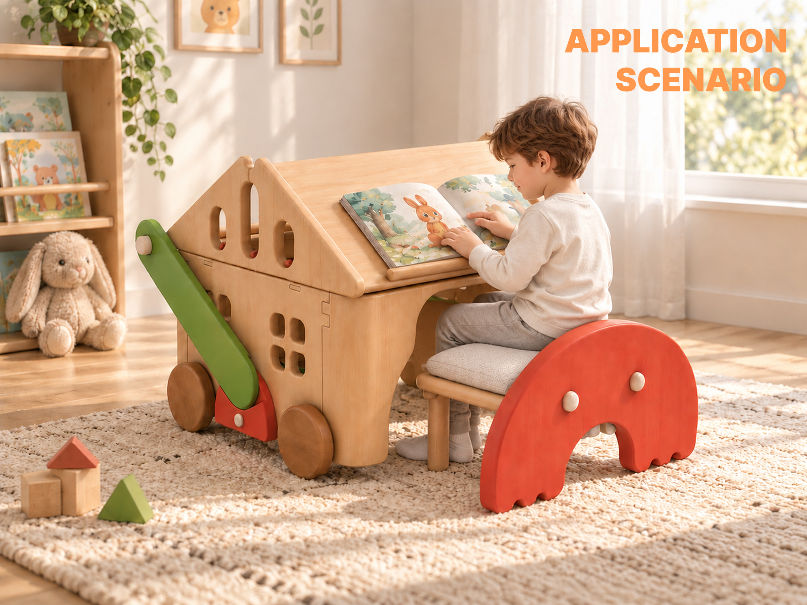

把喜欢的，都收好。
开放式收纳，让物品清晰可见。转动把手，带着小小收藏去往下一个角落。
一套构件，陪伴孩子的不同日常。
阅读、收纳、玩耍，再一起搭建。
让家具成为探索与创造的一部分。

RE:PLAY 是一套面向儿童学习、玩耍与收纳场景的可重组家具系统。标准化木质构件通过榫接、可拆插销与木质螺纹连接，组成不同的家具形态。
孩子可以自己参与搭建，也可以和家长一起完成。把组装、拆解与重新组合，变成一次关于动手、协作与创造的体验。
看看构件如何连接 ↗开放式收纳，让物品清晰可见。转动把手，带着小小收藏去往下一个角落。
倾斜的阅读面与纯净的黑板面，让阅读与创作拥有自己的位置。
桌面游戏、双人跷跷板和摇摇椅，同一组构件，展开不同的玩法。
这一次，亲手转一转。拖动模型，发现每一个细节。
把小物收好，推着快乐出发
一起坐，一起玩
从认识一个连接，到探索整套构件。
选一个形态，换个角度，发现每个构件的新角色。
浅色木材搭配明快的红与绿，让每一种组合都保留熟悉的温度。
完整展板记录了 RE:PLAY 的设计理念、使用场景与构件关系。